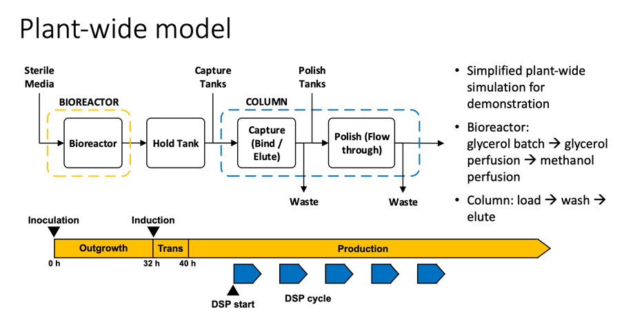
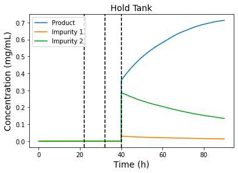
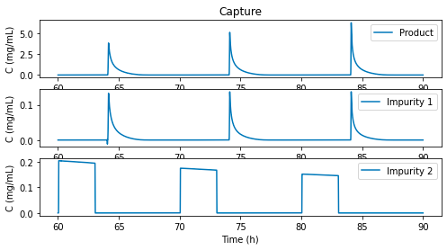

Tutorial
Table of Contents
Background
N-linked Glycosylation Simulation
High Level Model Overview
The glycosylation model is based on the cisternal maturation assumption with recycling of Golgi resident proteins first proposed by Jimenez del Val et al. (2011). The mass balances for the species involved were calculated considering the Golgi apparatus as a single plug flow reactor operating at steady state according to equations (11)-(13) and the reaction scheme reported in the figure below. The effect of the operating conditions on N-glycosylation was simulated by linking the kinetics of enzymatic reactions to the availability of sugar precursors, and the concentrations of metal ions and ammonia.

Model Description
Mass balance equations for the unstructured cell culture model and the mechanistic glycosylation model adapted from Karst et. al. (2017). The modeling framework can be divided in two sections. The first part comprises a simple unstructured cell culture model for the estimation of cell specific parameters (e.g., growth rate, ammonia and antibody specific productivities) and process related values (e.g., bleed rate). The mass balances of the perfusion bioreactor are based on the assumption of a CSTR reactor (e.g., perfect mixing).

Reference: Karst, D. J., Scibona, E., Serra, E., Bielser, J. M., Souquet, J., Stettler, M., … & Villiger, T. K. (2017). Modulation and modeling of monoclonal antibody N‐linked glycosylation in mammalian cell perfusion reactors. Biotechnology and bioengineering, 114(9), 1978-1990.
Kinetic Reaction Network: column (reactant), row (product), cell (enzyme)

Plantwise Simulation

Reference: Amos E. Lu, Joe A. Paulson, Nicholas J. Mozdzierz, Alan Stockdale, Ashlee N. Ford Versypt, Kerry R. Lov, J. Christopher Love, Richard D. Braatz (2015). Control Systems Technology in the Advanced Manufacturing of Biologic Drugs. CCA.
Bioreactor Kinetic Model
Harvest/Hold Tank Model
\(ùëã\): biomass
\(ùêπ_ùëñùëõ\): inlet flow rate (L/h)
\(ùêπ_ùëúùë¢ùë°\): outlet flow rate (L/h)
\(ùúá_ùëî\),\(ùúá_ùëö\): Specific growth rate
\(ùëÜ_{ùëñùëõ,ùëî}\): inlet glycerol concentration (g/L)
\(ùëÜ_{ùëñùëõ,ùëö}\): inlet methanol concentration (g/L)
\(ùëÜ_ùëî\): glycerol concentration (g/L)
\(ùëÜ_ùëö\): methanol concentration (g/L)
\(ùëû_{ùëÜ_ùëî}\),\(ùëû_{ùëÜ_ùëö}\): Specific rate of substrate consumption (g/g-h)
\(ùëû_{ùëÉ_ùëñ}\): Specific product production rate (g/g-h)
\(ùëÉ_ùëñ\): protein \(ùëñ\)
\(ùëâ\): bioreactor volume (L)
Chromatography Model
Mobile phase (lipid phase)
Nonideal transport model for the concentration of species \(i\)th species
The mass balance of salt whose concentration is denoted by \(ùê∂_{ùë†ùëéùëôùë°}\), is
Adsorbed (stationary) phase: the kinetics of the adsorption are
where \(C_i\) is the concentration of species \(i\) in the liquid phase, \(\theta\) is the dimensionless time, \(\epsilon_{tot}\) is the total porosity, \(z\in[0,1]\) is the dimensionless length, \(Pe\) is the Peclet number, \(q_i\) is the concentration of species \(i\) in the adsorbed phase, and \(\epsilon_pore\) is the particle porosity. \(k_{ads,i}\) is the rate constant of adsorption for component \(i\), \(Q\) is the number of ligands available for adsorption and desorption, \(v_i\) is the characteristic charge of component \(i\), \(k_{des,i}\) is the rate constant of desorption for component \(i\).
Reference: Sejergaard, L., Karkov, H. S., Krarup, J. K., Hagel, A. B. B., & Cramer, S. M. (2014). Model‐based process development for the purification of a modified human growth hormone using multimodal chromatography. Biotechnology Progress,30(5), 1057-1064.
N-linked Glysycolation Simulation
Steady-State N-linked Glycosylation Simulation
You can simulate the steady-state N-linked Glycosylation in a perfusion bioreactor as follows
import numpy as np
from vLab.PerfusionSimulator.GlycosylationODESolver import ODESolver
from vLab.GlycosylationModelBase.GlycosylationNetwork import GlycosylationNetwork
from vLab.GlycosylationModelBase.GlycosylationModelParams import CellCultureVariables, GlycosylationModelParamClass
fp = GlycosylationNetwork(network_data_path='./data/Network Description.csv')
p = GlycosylationModelParamClass()
x = CellCultureVariables(1.5, 0.01, 0.1198, 66.3856,
np.array([0.490 + 1.452, 0.117 + 0.379, 0.058 + 0.190]) * 1e3,
np.array([1.62, 0.043, 0.1158, 0.040]) * 1e3)
# compute boundary conditions
ic = np.zeros((fp.nos + fp.nns + fp.nn))
ic[0] = x.mabtiter # umol / L
ic[fp.nos:(fp.nos + fp.nns)] = x.nscyt * 40 # nucleotide sugar concentrations in umol / L.third entry is mystery
ic[fp.nos + 3] = x.udpgalcyt * 1e3 * 40 # updating with correct UDP-Gal concentration
ic[(fp.nos + fp.nns):] = x.ncyt # sum of nucleotide concentrations in umol / L
Solve for N-glycan in the steady state operation and summarize them in major oligosaccharide residues (HM, FA1G1, FA2G0, FA2G1, FA2G2, SIA)
t = [0,1]
ode_solver = ODESolver(t, ic, x, p, fp)
HM, FA1G1, FA2G0, FA2G1, FA2G2, SIA = ode_solver.solve()
for x in ode_solver.os[:, -1]:
print("{:10.4f}".format(x))
print(HM, FA1G1, FA2G0, FA2G1, FA2G2, SIA)
Plot the glycan distribution!
plt.bar(x=['HM', 'FA1G1', 'FA2G0', 'FA2G1', 'FA2G2', 'SIA'],
height=[HM, FA1G1, FA2G0, FA2G1, FA2G2, SIA])
plt.ylabel('Glycoforms (%)')
plt.legend(loc='upper left')
Dynamic N-linked Glycosylation Simulation
We first load the default feed strategy from data/states_132hours.csv, glycosylation network from
data/Network Description.csv and glycosylation model parameters. Then we simulate the N-linked Glycosylation in a
perfusion bioreactor by initializing a new DynamicGlycosylationSolver class and calling method .solve().
import numpy as np
import matplotlib.pyplot as plt
from vLab.DynamicGlycosylationSimulator.Util import compute_species_distribution
from vLab.GlycosylationModelBase.GlycosylationNetwork import GlycosylationNetwork
from vLab.GlycosylationModelBase.GlycosylationModelParams import GlycosylationModelParamClass
from vLab.DynamicGlycosylationSimulator.DynamicGlycosylationSolver import DynamicGlycosylationSolver
inputs = np.loadtxt('data/states_132hours.csv', delimiter=',')
fp = GlycosylationNetwork(network_data_path='data/Network Description.csv')
p = GlycosylationModelParamClass(is_dynamic=True)
solver = DynamicGlycosylationSolver(inputs, p, fp, 20)
states_buffer = solver.solve()
Plot the macroscopic viable cell density (VCD)
plt.figure(figsize=(8, 4))
plt.plot(solver.tsp, states_buffer[:, 1] / states_buffer[:, 0], lw=2, label='VCD')
plt.xticks(fontsize=12)
plt.yticks(fontsize=12)
plt.title('VCD', fontsize=15)
plt.ylabel(r'VCD ($10^6$ cells/mL)', fontsize=15)
plt.xlabel('Time (hr)', fontsize=15)
plt.tight_layout()
plt.show()

Plot Mn concentration
plt.figure(figsize=(8, 4))
plt.plot(solver.tsp, states_buffer[:, 2] / states_buffer[:, 0], lw=2, label='Mn')
plt.xticks(fontsize=12)
plt.yticks(fontsize=12)
plt.title('Mn', fontsize=15)
plt.ylabel(r'Mn ($\mu$mol/L)', fontsize=15)
plt.xlabel('Time (hr)', fontsize=15)
plt.tight_layout()
plt.show()

Solve for dynamic N-glycan distribution in a perfusion bioreactor and summarize them in major oligosaccharide residues (HM, FA1G1, FA2G0, FA2G1, FA2G2, SIA). Then plot HM distribution
HM, FA1G1, FA2G0, FA2G1, FA2G2, SIA = compute_species_distribution(states_buffer[:, 6:].T)
plt.figure(figsize=(8, 4))
plt.plot(solver.tsp, HM, lw=2, label='HM')
plt.xticks(fontsize=12)
plt.yticks(fontsize=12)
plt.title('HM', fontsize=15)
plt.ylabel('Glycoform (%)', fontsize=15)
plt.xlabel('Time (hr)', fontsize=15)
plt.tight_layout()
plt.show()
Plot FA2G1 distribution
plt.figure(figsize=(8, 4))
plt.plot(solver.tsp, FA2G1, lw=2, label='FA2G1')
plt.xticks(fontsize=12)
plt.yticks(fontsize=12)
plt.title('FA2G1', fontsize=15)
plt.ylabel('Glycoform (%)', fontsize=15)
plt.xlabel('Time (hr)', fontsize=15)
plt.tight_layout()
plt.show()

Plantwise Simulation
Running the plantwise simulation with initial state x0 and default model parameters, process time
and inlet substrate concentrations
from vLab.IntegratedBioprocess.PlantwiseSimulator import PlantwiseSimulator
X0 = 0.1 # initial viable biomass concentration (g/L)
Sg0 = 40 # initial glycerol concentration (g/L)
Sm0 = 0 # initial methanol concentration (g/L)
P10 = 0 # initial product conentration (g/L)
P20 = 0
P30 = 0
VB0 = 0.5 # initial bioreactor volume (L)
VH0 = 1e-8 # initial hold tank volume (L)
x0 = [X0, Sg0, Sm0, P10, P20, P30, VB0, P10, P20, P30, VH0]
xC0 = [0] * (10 * 30 + 3)
x0 = x0 + xC0
import time
start_time = time.time()
solver = PlantwiseSimulator()
sol = solver.solve(x0)
elapse_time = time.time() - start_time
Import the matplotlib and numpy for plot
import numpy as np
import matplotlib.pyplot as plt
t = np.array(sol.t)
x = np.array(sol.x)
plt.plot(t, x[:, 3:6])
plt.axvline(solver._process_time[1], ls='--', c='k')
plt.axvline(solver._process_time[2], ls='--', c='k')
plt.title('Bioreactor', fontsize=14)
plt.ylabel('Concentration (mg/mL)', fontsize=14)
plt.xlabel('Time (h)', fontsize=14)
plt.legend(['Product', 'Impurity 1', 'Impurity 2'], loc='upper left')
plt.show()

plt.plot(t, x[:, 7:10])
plt.axvline(solver._process_time[1], ls='--', c='k')
plt.axvline(solver._process_time[2], ls='--', c='k')
plt.axvline(solver._process_time[3], ls='--', c='k')
plt.title('Hold Tank', fontsize=14)
plt.ylabel('Concentration (mg/mL)', fontsize=14)
plt.xlabel('Time (h)', fontsize=14)
plt.legend(['Product', 'Impurity 1', 'Impurity 2'], loc='upper left')
plt.show()

Plot the capture step in chromatography
tC = t[t >= solver._process_time[4]]
nrows = len(tC)
xC = x[t >= solver._process_time[4], 11:]
yplot = xC[:, :(30 * 10)].reshape(nrows, 10, 30, order='F')
plt.figure(figsize=(8,4))
plt.subplot(311)
plt.plot(tC, yplot[:, 0, -1], label='Product')
plt.title('Capture')
plt.ylabel('C (mg/mL)')
plt.legend(loc='upper right')
plt.subplot(312)
plt.plot(tC, yplot[:, 1, -1], label='Impurity 1')
plt.ylabel('C (mg/mL)')
plt.legend(loc='upper right')
plt.subplot(313)
plt.plot(tC, yplot[:, 2, -1], label='Impurity 2')
plt.ylabel('C (mg/mL)')
plt.xlabel('Time (h)')
plt.legend(loc='upper right')

Plot polish step in chromatography!
plt.figure(figsize=(8,4))
plt.subplot(311)
plt.plot(tC, yplot[:, 4, -1], label='Product')
plt.title('Polish')
plt.ylabel('C (mg/mL)')
ax = plt.gca()
ax.axes.xaxis.set_visible(False)
plt.legend(loc='upper right')
plt.subplot(312)
plt.plot(tC, yplot[:, 5, -1], label='Impurity 1')
plt.ylim((0,1))
plt.ylabel('C (mg/mL)')
plt.legend(loc='upper right')
ax = plt.gca()
ax.axes.xaxis.set_visible(False)
plt.subplot(313)
plt.plot(tC, yplot[:, 6, -1], label='Impurity 2')
plt.ylim((0,1))
plt.ylabel('C (mg/mL)')
plt.xlabel('Time (h)')
plt.legend(loc='upper right')

Raman Spectropecty
Raman
Welcome to Raman.
This package is created for NIIMBL4.1 Case2.
Currently supported input files are:
.spc
.dx
.csv
Currently supported a set of routines to execute spectral pre-processing like:
MSC
SNV
Detrend
Savitzky - Golay
Derivatives
..
#Import basic libraries
import matplotlib.pyplot as plt
import numpy as np
import pandas as pd
from sklearn.decomposition import PCA
from sklearn.preprocessing import scale
from sklearn import model_selection
from sklearn.model_selection import RepeatedKFold
from sklearn.model_selection import train_test_split
from sklearn.cross_decomposition import PLSRegression
from sklearn.metrics import mean_squared_error
from src.vLab.RamanAnalytics.ReadSpc import read_spc
from src.vLab.RamanAnalytics.ReadDx import ReadDx
from src.vLab.RamanAnalytics.Preprocessing import msc, detrend, sav_gol, snv
Read .spc file
Read a single file
spc = read_spc('VIAVI/JDSU_Phar_Rotate_S06_1_20171009_1540.spc')
spc.plot()
plt.xlabel("nm")
plt.ylabel("Abs")
plt.grid(True)
print(spc.head())
gx-y(1)
908.100000 0.123968
914.294355 0.118613
920.488710 0.113342
926.683065 0.108641
932.877419 0.098678
dtype: float64

Read .dx spectral files
Raman also allows to read the most common .dx file formats
Read a single .dx file
Foss_single = read_dx()
# Run read method
df = Foss_single.read(file='../../data/FOSS/FOSS.dx')
df.transpose().plot(legend=False)

for c in Foss_single.Samples['29179'].keys():
print(c)
y
Conc
TITLE
JCAMP_DX
DATA TYPE
CLASS
DATE
DATA PROCESSING
XUNITS
YUNITS
XFACTOR
YFACTOR
FIRSTX
LASTX
MINY
MAXY
NPOINTS
FIRSTY
CONCENTRATIONS
XYDATA
X
Y
Read .csv files
Raman also allows to read .csv file
df = pd.read_csv('data/RamanRaw.csv')
X = df[df.columns[301:1702]]
y = df[df.columns[-4:]]
Spectra preprocessing
A set of built in classes to perform spectra pre-processing like:
MSC: Multiplicative scattering correction
SNV: Standard normal variate
Detrend
n order derivative
Savitzky golay smmothing
MSC
MSC = msc()
MSC.fit(X)
X_msc = MSC.transform(X)
plt.figure()
X.transpose().plot(legend=False, title = "Raw spectra")
plt.ylim(bottom = 0, top = 2.5 * 10**6)
plt.xlabel('RamanShift(cm-1)')
plt.ylabel('Counts')
plt.show()
plt.figure()
X_msc.transpose().plot(legend=False, title = "MSC spectra")
plt.ylim(bottom = 0, top = 2.5 * 10**6)
plt.xlabel('RamanShift(cm-1)')
plt.ylabel('Counts')
plt.show()


SNV and Detrend
SNV = snv()
X_snv = SNV.fit_transform(X)
Detr = detrend()
X_detrend = Detr.fit_transform(spc=X_snv, wave=np.array(X_snv.columns.astype('float64')), deg = 1)
plt.figure()
X.transpose().plot(legend=False, title = "Raw spectra")
plt.ylim(bottom = 0, top = 2.5 * 10**6)
plt.xlabel('RamanShift(cm-1)')
plt.ylabel('Counts')
plt.show()
plt.figure()
X_snv.transpose().plot(legend=False, title = "SNV spectra")
#plt.ylim(bottom = 0, top = 2.5 * 10**6)
plt.xlabel('RamanShift(cm-1)')
plt.ylabel('Counts')
plt.show()
plt.figure()
X_detrend.transpose().plot(legend=False, title = "SNV+ Detrend spectra")
#plt.ylim(bottom = 0, top = 2.5 * 10**6)
plt.xlabel('RamanShift(cm-1)')
plt.ylabel('Counts')
plt.show()


Savitzky - Golay
SAV_gol = sav_gol()
X_SAV = SAV_gol.transform(X, deriv=2)
plt.figure()
X.transpose().plot(legend=False, title = "Raw spectra")
plt.ylim(bottom = 0, top = 2.5 * 10**6)
plt.xlabel('RamanShift(cm-1)')
plt.ylabel('Counts')
plt.show()
plt.figure()
X_snv.transpose().plot(legend=False, title = "Savitzky golay smmothing spectra")
#plt.ylim(bottom = 0, top = 2.5 * 10**6)
plt.xlabel('RamanShift(cm-1)')
plt.ylabel('Counts')
plt.show()


Split The Dataset
split the dataset into training (70%) and testing (30%) sets
We now split the samples into a training set and a test set in order to estimate the test error from different methods. In this part, we use the pre-processed raman data via SNV and Detrend as example. The concentration of glucose is target variable.
X_train, X_test, y_all_train, y_all_test = train_test_split(X_detrend, y, test_size=0.3, random_state=0)
Metabolites = {0:'Glucose', 1: 'Lactate', 2: 'Glutamine', 3: 'NH4'}
#0:GLuc; 1: Lac; 2:Gln; 3: NH4;
index = 0
y_train, y_test = y_all_train[y.columns[index]].to_frame(), y_all_test[y.columns[index]].to_frame()
Raman Spectra Data Analysis
Ridge Regression
We fit a ridge regression model on the training set. Without given any value of Regularization strength. The function will implement cross validation to find optimal value of it with the smallest validation error.
The output includings:
Visualization of regression coefficients
Regression results on the training data
Regression results on the test data
rr = RR()
rr.analysis(X_train, X_test, y_train, y_test, Metabolites[index])


Lasso Regression
We fit a Lasso regression model on the training set. Without given any value of Regularization strength. The function will implement cross validation to find optimal value of it with the smallest validation error.
The output includings:
Visualization of regression coefficients
Regression results on the training data
Regression results on the test data
la = LA()
la.analysis(X_train, X_test, y_train, y_test, Metabolites[index])


We fit a Elastic Net model on the training set. Without given any value of Regularization strength. The function will implement cross validation to find optimal value of it with the smallest validation error.
The output includings:
Visualization of regression coefficients
Regression results on the training data
Regression results on the test data
Elastic Net
en = EN()
en.analysis(X_train, X_test, y_train, y_test, Metabolites[index])


Principal Components Regression
We fit Principal Components Regression on the training set. Without given any number of principal component to keep. The function will implement cross validation to find optimal value of it with the smallest validation error.
The output includings:
Visualization of regression coefficients
Regression results on the training data
Regression results on the test data
pcr = PCR()
pcr.analysis(X_train, X_test, y_train, y_test, Metabolites[index])


Partial least-squares (PLS) regression
We fit Partial least-squares (PLS) regression on the training set. Without given any number of principal component to keep. The function will implement cross validation to find optimal value of it with the smallest validation error.
The output includings:
Visualization of regression coefficients
Regression results on the training data
Regression results on the test data
pls = PLS()
pls.analysis(X_train, X_test, y_train, y_test, Metabolites[index])